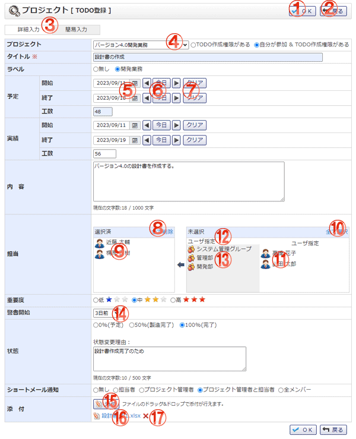

TODOを新規登録する画面です。

機能説明
OKボタンTODO登録確認画面へ遷移します。 |
戻るボタン遷移元画面へ遷移します。 |
|---|---|
簡易・詳細入力切り替え簡易入力か詳細入力かを切り替えます。 |
プロジェクトコンボTODOを登録するプロジェクトを選択します。 |
カレンダーボタン日付選択カレンダーを表示します。 |
前日・今日・翌日ボタン日付を設定します。 |
クリアボタン日付を未設定状態にします。 |
全て削除ボタン選択済エリアに表示されている全てのユーザを未選択状態にします。 |
選択済ユーザユーザ名をクリックすることで、ユーザを未選択状態にします。 |
全て選択ボタン未選択エリアに表示されている全てのユーザを選択済エリアに追加します。 |
未選択ユーザユーザ名をクリックすることで、ユーザを選択済エリアに追加します。 |
ユーザ指定クリックすることで、プロジェクトに所属する全てのユーザが未選択エリアに表示されます。 |
グループ名グループ名をクリックすることで、グループに所属するユーザが未選択エリアに表示されます。 |
警告開始コンボ警告を開始する日を設定します。 |
添付ボタンフォルダウィンドウが開きます。フォルダウィンドウでファイルを選択すると、添付ボタンの下にファイル名が表示されます。 |
ファイル名ファイルをダウンロードします。 |
削除アイコンファイルを削除します。 |
表示・入力項目説明
プロジェクト
プロジェクトを選択します。
タイトル
タイトルを入力します(100文字以内)。
ラベル
ラベルを選択します。
予定
開始・終了・工数を入力します(正数部3桁小数部1桁以内)。
実績
開始・終了・工数を入力します(正数部3桁小数部1桁以内)。
内容
内容を入力します(1000文字以内)。
担当
担当として設定するユーザを、メンバーリストから選択し追加します。マイプロジェクトへのTODO登録の場合は表示されません。
重要度
重要度を選択します。
警告開始
警告を開始する日を選択します。
状態
状態を選択します。
状態変更理由
状態変更理由を入力します(500文字以内)。
ショートメール通知
ショートメール通知を選択します。マイプロジェクトへのTODO登録の場合は表示されません。
添付
添付するファイルを選択します。